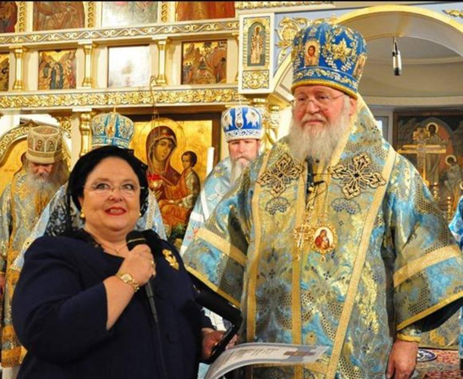
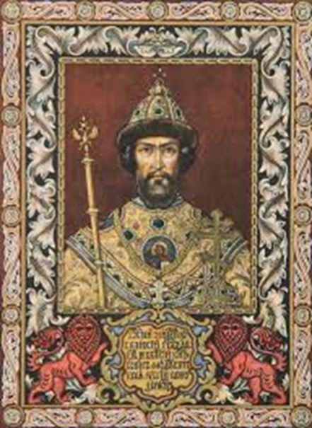
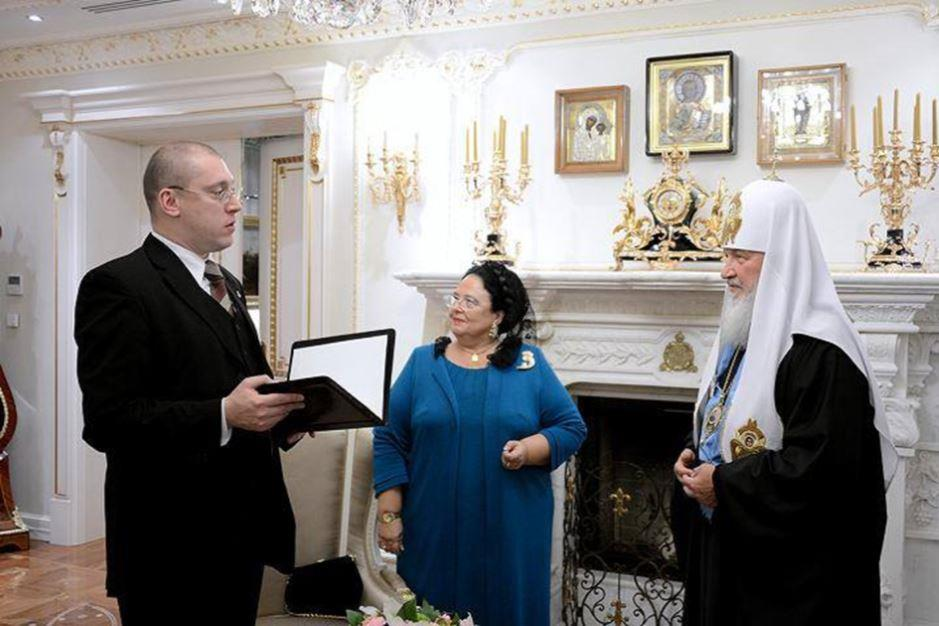
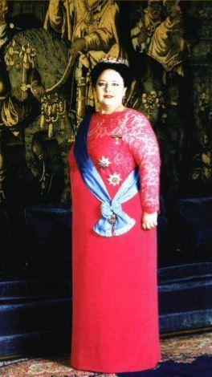
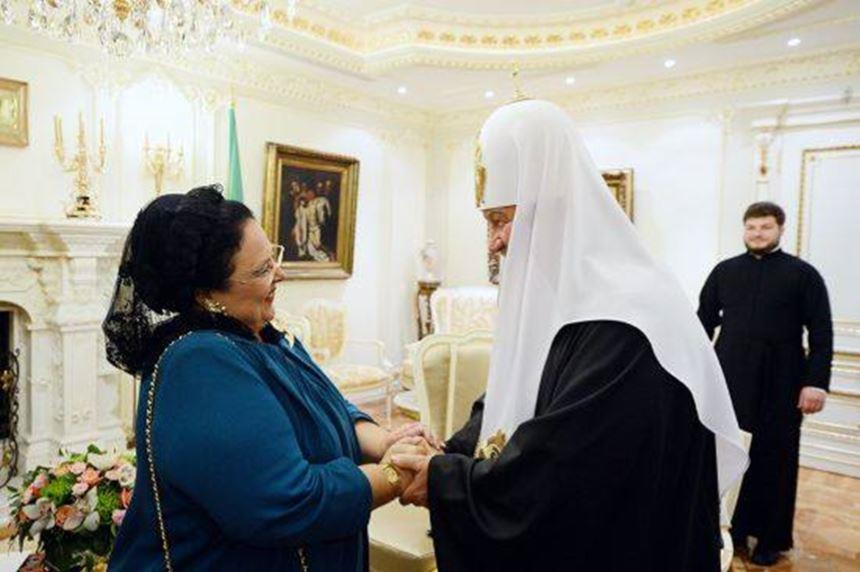

Dans la guerre des Patriarcats orthodoxes russes, la Grande-duchesse Maria Vladmirovna Romanov prend position !
Le monde orthodoxe est en émoi. L’église russe a annoncé au cours d’une conférence, à Minsk, qu’elle rompait définitivement ses liens avec le Patriarcat de Constantinople. Églises jusqu’ici rivales, c’est la décision épiscopale de l’ancienne capitale de l’Empire romain d’Orient, dont la Russie a reçu les régalais en 1453, de reconnaître une église indépendante en Ukraine qui a ravivé les tensions. Un schisme retentissant qui a forcé la Grande duchesse Maria Vladmirovna, prétendant au trône de Russie pour la branche Kirillovitch, à sortir de sa neutralité.
« Nous ne pouvons pas garder le contact avec cette église, qui est en situation de schisme». Chargé de la diplomatie du Patriarcat de Moscou, le métropolite Hilarion Alfeïev a annoncé à la presse internationale spécialisée, le 15 octobre, la rupture totale de tous liens avec le Patriarcat de Constantinople. Une décision lourde de conséquences puisqu’elle excommunie de facto tous fidèles qui seraient tentés d’aller assister aux liturgies célébrées par son rival. Interdiction a même été faîte aux prêtres russes de fréquenter leurs alter-égos. C’est 332 années de domination religieuse russe en Ukraine qui viennent de voler en éclat, énième épisode que se livrent les deux pays dans leur guerre d’influence exacerbée par le rattachement de la Crimée séparatiste à la Russie. Chacun accusant l’autre de faire le jeu de son gouvernement respectif. Une situation qui a contrainte la Grande-duchesse Maria Vladmirovna Romanov à prendre position.
C’est sous le règne du régent Boris Godounov, en 1589, que celui- décide de créer le patriarcat de Moscou qui devient alors autocéphale, c’est au dire relevant du christianisme oriental. Dès lors, l’église orthodoxe de toutes les Russies va être inféodée au tsarisme et être la pierre angulaire de la monarchie jusqu’à sa chute en 1917. Avant de reconnaître un renouveau important après la fin communisme en 1991 et de retrouver toute sa puissance. « J'ai été attristée et alarmée par l'annonce des mesures radicales prises par le patriarche Bartholomée de Constantinople qui est intervenue dans les affaires internes de l'Église en Ukraine » a déclaré la prétendante au trône de Russie.
« J’avais bien espéré que la récente rencontre entre les patriarches Kirill et Bartholomée en Turquie aurait abouti à un accord de paix la paix entre les patriarcats de Moscou et de Constantinople, que les liens ne seraient pas rompus mais renforcés.
Mais au lieu de cela, Constantinople a pris une décision, ignorant totalement la position actuelle de l’Église orthodoxe russe et de l’Église orthodoxe ukrainienne canonique. Un tel acte ne peut que me causer une énorme tristesse et un désarroi total » a ajouté la descendante en ligne directe du tsar réformateur Alexandre II.
Première juridiction autocéphale de l’église orthodoxe, celle de Constantinople va occuper dès 1054 une place prépondérante au sein de la Pentarchie, l’église des 7 conciles. Son influence s’étend du quartier du Phanar, à Istanbul, jusqu’en Grèce et a essaimé dans divers pays dont la France qui préside l’assemblée des évêques orthodoxes, située dans l’Hexagone. Dans ce conflit qui divise les orthodoxes, la Grande duchesse Maria Vladimirovna ne cache pas sa fidélité au Patriarcat de Moscou. « Je n'ai jamais caché le fait que je suis une fille fidèle de l'Église orthodoxe russe, que je fais confiance à sa hiérarchie et que, dans toute la mesure de mes moyens, je travaille à la préservation de l'unité canonique du troupeau qui constitue le patriarcat de Moscou comme de de ses traditions » assène celle qui pourrait occuper un trône en Russie après le départ du pouvoir du Président Vladimir Poutine. Tant il est vrai que l’église, bien divisée également sur le sujet, est assez proche de la mouvance monarchiste. Lors du centenaire de la chute de la monarchie, le métropolite Hilarion avait largement fait campagne dans les médias pour la restauration de la monarchie. Et sa position actuelle au sein du Saint-Synode ne laisse que peu de doutes aux préférences du haut –épiscopat orthodoxe.
« (…) Notre Maison [Romanov Holstein-Gottorp-ndlr] a toujours entretenu des liens spirituels étroits et chaleureux avec les hiérarques venues d'autres églises orthodoxes » a néanmoins tenu à rappeler la petite-fille du Grand-duc Cyrille, qui s’était proclamé curateur du trône en 1922. Avant de revenir sur la situation catastrophique qui prévaut de Moscou à Constantinople où des troubles pourraient éclater entre partisans des deux autocéphalies. Mes sentiments, concernant la situation de l'Église en Ukraine, sont donc fondés non seulement sur mon appartenance à l'Église orthodoxe russe, mais aussi sur ma compréhension de l'histoire et sur ma propre expérience de participation à diverses activités de rétablissement de la paix. » déclare encore la grande-duchesse qui n’hésite pas réaffirmer la primauté de Moscou sur sa « petite sœur » de Constantinople.
Non sans critiquer les manipulations de l’église ukrainienne aux ordres de Kiev selon elle et regrettant que le Patriarche Bartholomée ait accusé la Russie d’avoir déstabilisé l’Ukraine. « Je rappelle à tous que le début de cette instabilité a été la révolution ukrainienne de 2014, lorsque le président dûment élu a été destitué du pouvoir » se défend-elle. Rejointe par Vladimir Legoïda, un haut responsable de l'Église russe interrogé par Russia Today, qui a fait lui aussi remarquer « que cette décision s'assimilait à une tentative de saper les fondements du système canonique de toute l’orthodoxie ».
Et que semble lui donner raison le gouvernement ukrainien. En effet, le président Petro Porochenko, s'est félicité publiquement de cette prise de position du patriarche Bartholomée, « saluant la fin de l’« illusion impériale et des fantaisies chauvinistes» de la Russie, jugeant qu'il s'agissait d'un «nouvel acte d'indépendance» de l'Ukraine » précise encore Russia Today, la voix du Kremlin en France. Il est vrai que sitôt le communiqué du métropolite terminé, l’église de Kiev a annoncé la réintégration du primat Philarète Denissenko, pourtant défroqué et excommunié en 1997 par Moscou, rétablis dans sa dignité sacerdotale. « C'est une grande victoire du peuple ukrainien, qui aime Dieu, sur les démons de Moscou, la victoire du Bien sur le Mal, la victoire de la Lumière sur les Ténèbres » s’est réjoui le Président Porochenko, au plus bas dans les sondages à la veille de la prochaine élection générale, prévue l'année prochaine.
La prétendante au trône de Russie condamne la décision du Patriarche de Constantinople, tout en évoquant ces souvenirs en commun qu’elle partage avec le Patriarche Bartholomée : « j’ai encore de très bons souvenirs de notre rencontre et du patriarche Bartholomée lui-même : sa piété, son grand intellect, sa gentillesse, sa personnalité douce et mesurée. Ainsi, il m'est particulièrement pénible de voir les relations entre Églises se casser, de voir comment nos liens fraternels se sont soudainement brisés en deux et comment le monde orthodoxe tout entier est désormais affaibli par une prise de position dont il ne mesure pas les conséquences ».
Proposant de servir de médiatrice pour les deux camps au cours de l'interview, Maria Vladimirovna craint que ce schisme ne soit le prétexte à une nouvelle escalade militaire entre l’Ukraine et la Russie, accompagnée d’une sorte de balkanisation de l’épiscopat orthodoxe et appelant que cette « période de conflit et d’inimitié soit rapidement remplacée par une période de réconciliation et de pardon ».
Partager cette page